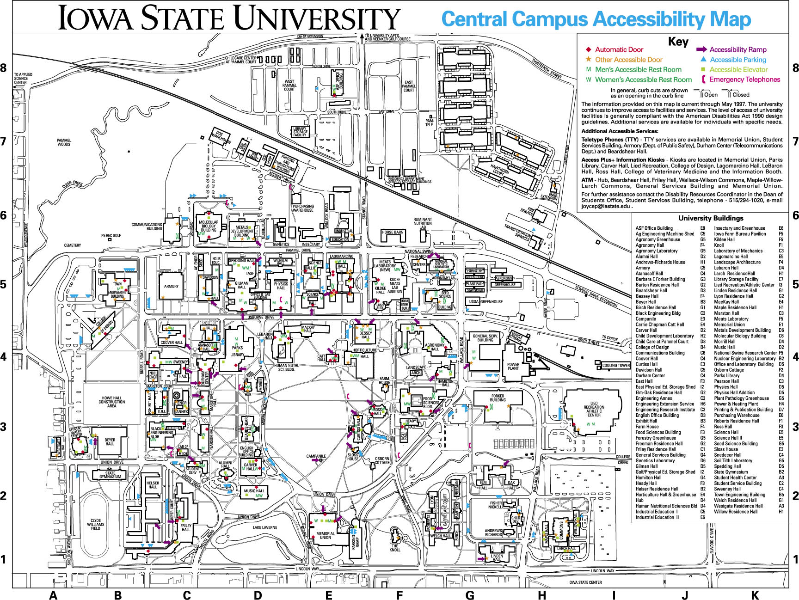

Since 2015, I have attended Iowa State University. Within the last year, I have become extremely interested in Cartography and Geographic Information Systems. I have many peers and professors who I would like to thank for their support in me in the beginning of my career in natural resourse management. Working on the STRIPS team has forever influenced how I approach conservation and our precious natural areas.

Above is an image of Iowa State's campus. This is an area I am very familiar with and will always be priceless to look at. Directly below is an image of Beardshear Hall. A staple of ISU, you can’t miss it. Below that is a slippery map of ISU. This map allows you to zoom in and out.